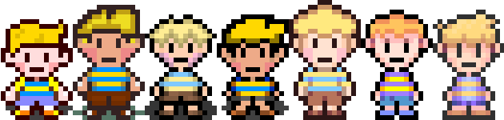

Oliver
Prototype, Oldest, Older, Old, New, Newer, Current
Welcome to The world of Mother!
You play as a group of kids, A teen, And a robot as you travel across the planet collecting 16 Magical Sanctuaries to save the world from THE Embodiment of Evil
This game is a Reimagining Of the game MetallicBound Most of the Battle Music are MIDI's From Starmen.net And Some of the Music is from PianoMan
We used to make this project using MV But we settled for VX ACE For a better Earthbound Engine

We thank you All of you for the support!
TopHat-
MOTHER: 20XX is a fan project,
and is in no way officially connected with Nintendo of America Inc., Shigesato Itoi, and Hobonichi.